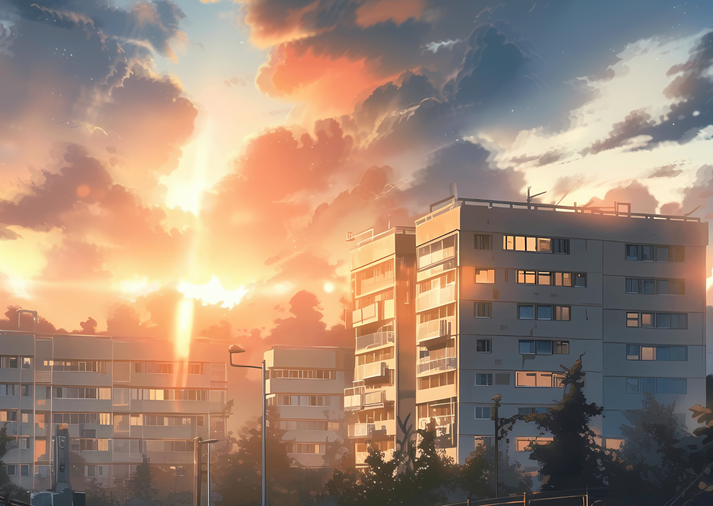

Project
At dusk, the city seems to be enveloped in a soft golden light. The sun slowly sinks, casting its last rays into the sky, staining the clouds red and warming the sky. In this warm orange and serene blue, the silhouette of the city's buildings gradually emerges.
The multi-storey residential buildings are neatly arranged, their windows glinting faintly in the setting sun, as if countless little eyes are watching this peaceful dusk. The streets were deserted, the vehicles were long gone, and only the breeze blew softly, taking away the hustle and bustle of the day.
At this moment, the city is like a quiet picture, beautiful and peaceful. The afterglow of the setting sun and the silhouette of the building create a unique aesthetic that makes people yearn for it. In this quiet twilight, people seem to be able to let go of all their worries and worries, and just quietly appreciate the beauty and tranquility.
When night falls and the stars begin to fill the sky, the city is ready for a new night. But the tranquility and beauty at dusk will always remain in people's hearts and become a precious memory.

All rights reserved by John